Tokyo lesson · Stitch QA
390 × 844 viewport. Frames follow the plane landing, hunger beat, prompt gates and final answer.
00 · Plane approaches Tokyo
The passenger plane descends toward the Tokyo runway.
287 ms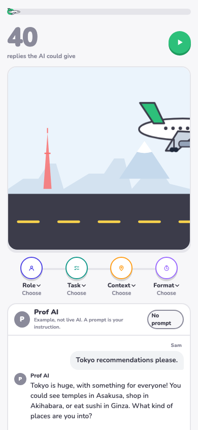
01 · Plane lands
The plane reaches the runway and stops.
3570 ms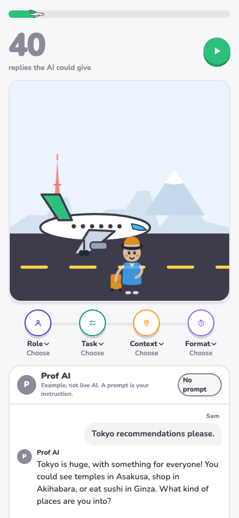
02 · Sam exits hungry
Sam leaves the plane with a suitcase and shows hunger.
4918 ms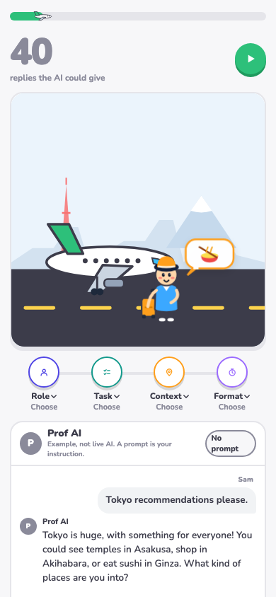
03 · Sam taps Role
The animated tap lands on the role gate.
8290 ms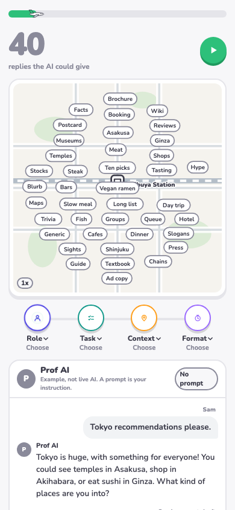
04 · Role: chooses Kenji
Sam selects a local guide and adds the Role fragment.
9557 ms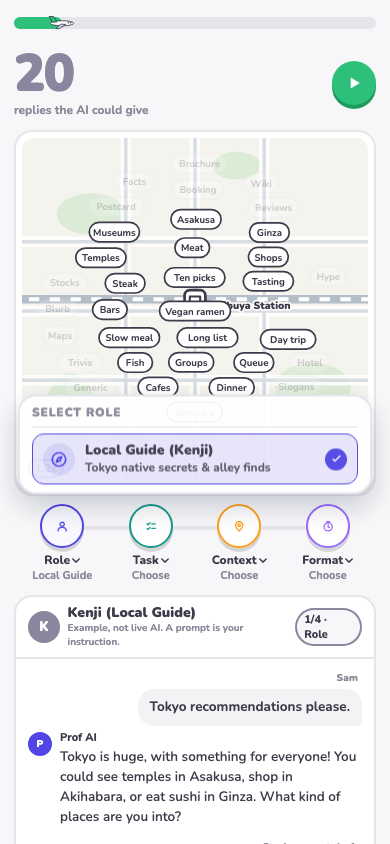
05 · Sam taps Task
The animated tap lands on the task gate.
14471 ms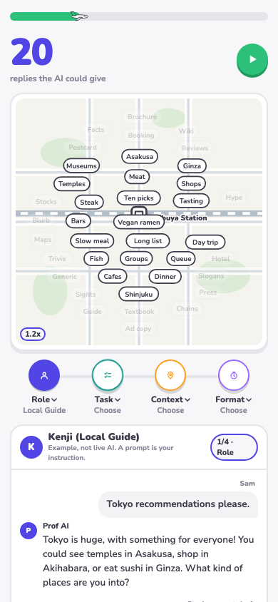
06 · Task: asks for lunch
Sam selects the lunch search and adds the Task fragment.
15725 ms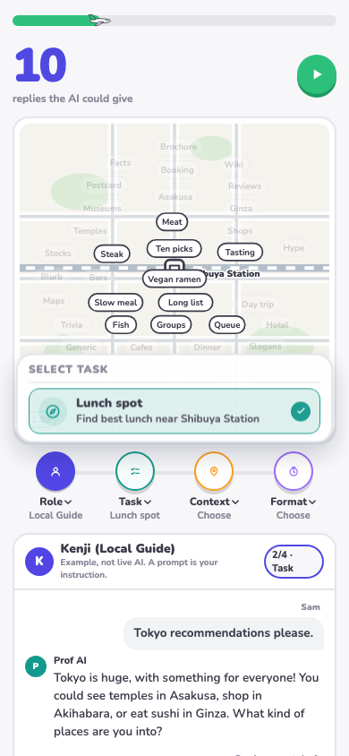
07 · Sam taps Context
The animated tap lands on the context gate.
21204 ms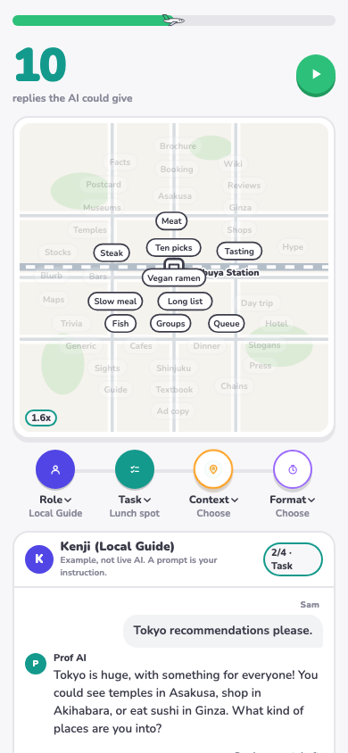
08 · Context: filters the food search
Sam selects vegetarian dining and adds the Context fragment.
22472 ms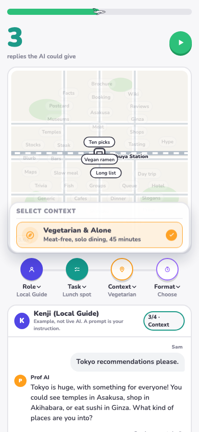
09 · Sam taps Format
The animated tap lands on the format gate.
27956 ms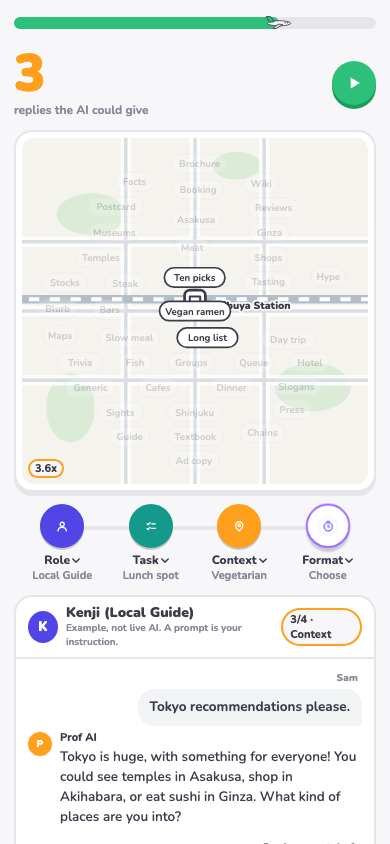
10 · Format: narrows the answer
Sam selects a short single pick with walking distance.
29208 ms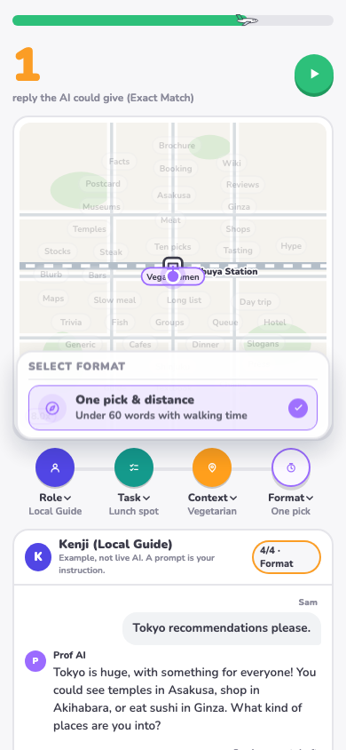
11 · Kenji recommends lunch
The completed prompt returns the vegetarian Shibuya food answer.
33093 ms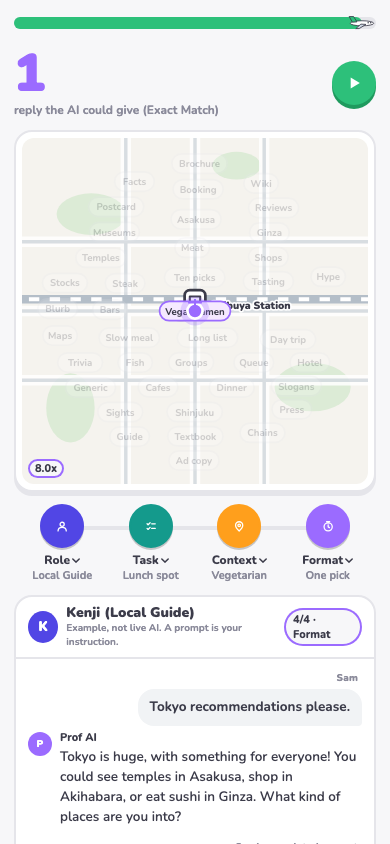
12 · Reduced motion: plane lands
Reduced motion keeps the arrival beat and advances the story.
153 ms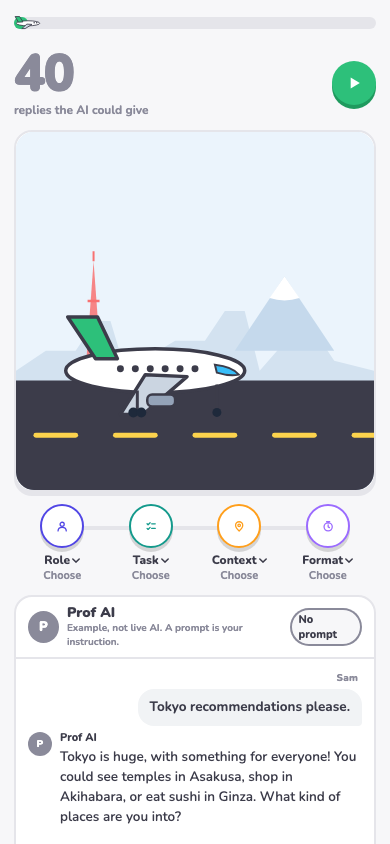